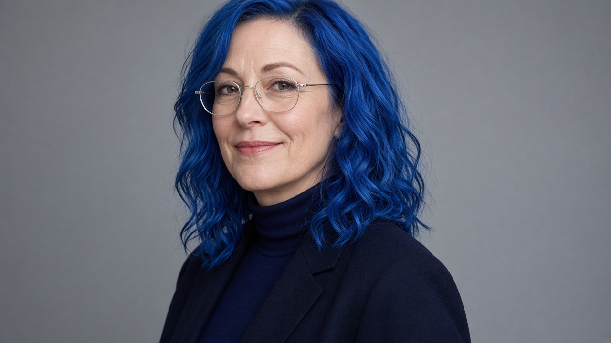

Standing note · Satire
The BIG Plan
Asmongold keeps circling a North Atlantic real-estate bit: Greenland as a possible American acquisition, Canada as the “51st state,” Iceland as the joke that sometimes gets numbered 52. This page is a dossier in the shape of a research panel. The panel was written this afternoon. The clips were not.
Fiction
Not an Issue
Not a fact-check
If you came for a verdict on whether anyone is about to annex anyone, Carvking is not issuing one. We appointed three people who do not exist, handed them the same three nouns, and let them disagree in complete sentences.
What people mean
Three places. One recurring sentence.
When chat, clips, and presidential asides line up, “the plan” is usually a sequence, not a document with a cover sheet.
-
01
Greenland
Resources, basing, and the question of whether a country can be discussed like a listing. Denmark is in the sentence, which keeps spoiling the simplicity.
-
02
Canada
“51st state,” used as tariff theater and as an annexation meme. The border does most of the work in the joke, mostly by existing.
-
03
Iceland
“52nd state,” usually with a grin and a glance toward Keflavík, as if a NATO airfield were a timeshare application.
Asmongold did not draft this. He reacts to it, argues with chat about it, and occasionally makes a deal with the room about what he will concede if events go a certain way. Viewers who hear the reactions rhyme start calling the rhyme a plan. That rhyme is the phenomenon. The binder is optional, and according to one member of the panel, imaginary.
The panel · all fictional
Three readings. None of them are a briefing.
Appointed for this page only. The institutes have no buildings, no letterhead, and no business being quoted anywhere else. The hair, the tie, and the headphones are costume.

Fellow 01 · Fiction
Dr. Helga Bláhársdóttir
Senior Fellow, Nordic Sovereignty Observatory (Reykjavík)
Specialism
“Map envy,” and diplomatic jokes that stop being jokes.
Senior fellow of an observatory invented for the portrait. She studies the moment a joke acquires a footnote. The electric-blue hair is the one detail you can check without leaving the photograph. The Reykjavík office is set dressing.
Her reading
The BIG Plan is a three-act Arctic ladder. Greenland is resources and basing. Canada is the “51st” meme doing the work of a tariff. Iceland’s “52nd state” jokes are a probe for who laughs and who reaches for a memo. Asmongold is not inventing it. He is the Greek chorus: at the edge of the orchestra, telling the room what the noise already means. She rates Iceland risk as mood music until someone puts it in a memo.
Fellow 02 · Fiction
Prof. Chad Wellington IV
Distinguished Visiting Chair of Manifest Destiny Studies, Gulf Coast Institute for Continental Integrity
Specialism
Taking presidential spitballing at face value, then drawing borders in PowerPoint.
Distinguished visiting chair of a discipline that consists of opening a slide deck and believing the first bullet. He has never met a joke he could not promote to a phase. The institute’s coastline is conceptual. The tie is sincere.
His reading
The BIG Plan is simply “finish the hemisphere.” Greenland first, because ice is strategic now. Canada next, because in his slides the border is already a suggestion with good lighting. Iceland last, on the grounds that “you already have a base vibe at Keflavík,” which is less a doctrine than a feeling he had near an airport. He has watched Asmongold say Greenland should not be taken by force and filed the clip under soft support. The label is his. The sentence on the clip is not.
Fellow 03 · Fiction
Dr. Mikkel “Null” Rønning
Principal Investigator, Stream Hermeneutics Lab (Copenhagen / Discord)
Specialism
Clip archaeology, chat scrollbacks, and when “the plan” means a bit versus a doctrine.
Principal investigator of a lab that is half Copenhagen and half a Discord channel with the notifications left on. His question is never “what is the plan.” It is: on this VOD, when did chat promote a bit to doctrine without asking.
His reading
There is no singular BIG Plan. There is a recurring stream motif. Asmongold cycles Greenland bets with chat, Denmark-as-ally caveats, and Canada 51st-state react energy. The pattern is real. The binder is not. What viewers call a plan is audience-facing pattern recognition: the same three nouns, the same argument with the room, a new clip ID. He recommends timestamped clip dossiers over white papers, and will not attend Wellington’s briefing unless someone brings the VOD.
Minutes
What they can stand to agree on
The nouns
Greenland, Canada, Iceland — in that order of how often a straight face survives the sentence.
The streamer
Asmongold is downstream of a presidential aside, a tariff spat, and a chat that loves a map. He is not a principal on a treaty.
Denmark
You cannot talk about taking Greenland without eventually saying “ally.” The sentence gets less fun for everyone when you do.
The line
He says “not by force” out loud. The fight is about what that line is for: a principle, a phase, or a clip that ratios.
Where the minutes break down
Bláhársdóttir
A shape, not a seizure.
The rhetoric has a ladder. A ladder is not a schedule. Iceland stays mood music until it survives contact with a memo. Until that day, Wellington may not borrow her globe, and he has already asked.
Wellington
Finish the hemisphere.
He heard “Denmark is a great ally; don’t take it by force” and wrote “acquisition via existing relationship” in the notes. Slide 14 labels Keflavík “already emotionally American.” He considers the objections a branding problem on the way to yes. The panel has asked him, twice, to stop calling opposition “soft support.”
Rønning
Bring the timestamp, or sit down.
Same clip, third notebook: he wrote the ID and went back to the scrollback. The “plan” is what the audience calls it after the third react. A white paper that does not link a VOD is, under lab policy, fan fiction — which this page admits to being, and his dossier does not.
The only reproducible result
Wellington heard “don’t” and opened a phase. Bláhársdóttir heard “don’t” and underlined it. Rønning heard “don’t” and saved the file. They agree the word was said. They do not agree that it means anything you could put on a map.
Watch desk
Homework the panel could not veto
They will not share a thesis. They will share a queue. These are public clips, linked out. The players stay on Kick and YouTube.
Read this
Nobody on this panel has a badge.
Dr. Helga Bláhársdóttir, Prof. Chad Wellington IV, and Dr. Mikkel “Null” Rønning are fictional. So are the Nordic Sovereignty Observatory, the Gulf Coast Institute for Continental Integrity, and the Stream Hermeneutics Lab. The portraits are costume for this page, not credentials. Please do not cite them, email them, or offer them a visiting semester.
Carvking is not alleging a classified plan, a government program, or that Asmongold possesses either. “The BIG Plan” here is a name for a recurring talking point — Greenland, Canada as a 51st state, Iceland as a 52nd-state joke — and for the way a stream audience turns reactions into a plot. This page is satire. The clips are other people’s public video.
If you want a fact-check, that is a different kind of Issue. This is not one.